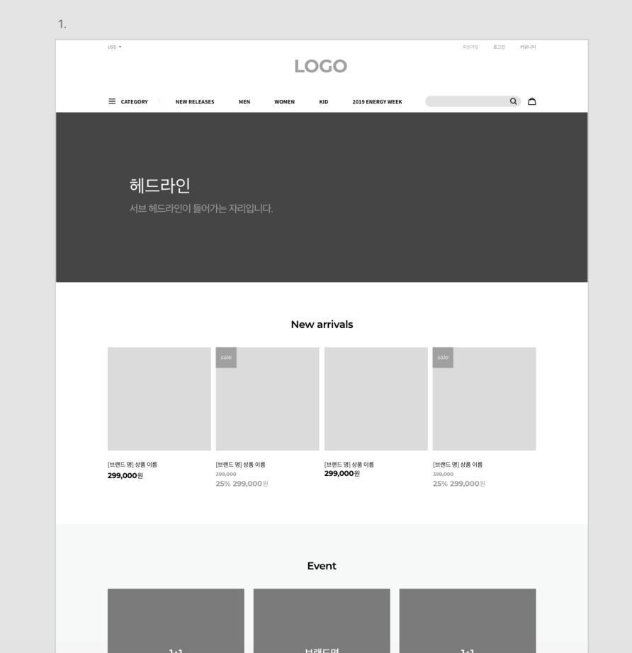

HTML 레퍼런스 북
와이어 프레임
웹 또는 앱 프로젝트를 진행할 때 필요한 과정 중 하나로 웹 페이지의 구조를 제안하기 위한 화면 설계도입니다. 즉 디자인이 들어가기 전 단계에서, 선(wire)을 이용해 윤곽선(frame)을 잡는 것을 말합니다. 단순한 선과 회색박스들로 보일 수 있겠지만, 디자인의 컨셉, 고객의 요구사항, 콘텐츠들의 기능 요소를 모두 파악하여 전략적으로 설계되어야 하므로 중요도가 높습니다. 또한, 이 와이어프레임이 잘 갖춰져 있어야 디자이너와 웹 퍼블리셔, 개발자 그리고 클라이언트가 서로 원활히 소통할 수 있게 됩니다.
고객이 웹 페이지 제작을 요청합니다. 기획자는 고객의 요구사항을 파악하고 메인에 나올 콘텐츠와 기능 요소들을 정리합니다. 정리된 자료를 토대로 와이어프레임을 제작하게 됩니다. 디자인의 컨셉, 레이아웃, 각각 요소들의 상호작용과 인터렉션까지도 정해주게 됩니다. 이 와이어프레임을 통해 개발자는 사이트의 기능을 이해하고, 디자이너는 디자인 컨셉을 원활하게 잡을 수 있고, 클라이언트는 요구사항과 원하는 기능이 제대로 전달되었는지를 사전에 확인할 수 있습니다.
와이어프레임을 만드는 목적
1. 사용자의 초점을 맞춘 컨셉유지
‘와이어프레임’은 효과적인 커뮤니케이션 도구를 활용됩니다. 사용자로부터 피드백을 쉽게 받을 수도 있고, 이해관계자들과의 의사소통도 원활하게 만들며, 디자이너들이 영감을 떠올리는데도 도움을 주기 때문인데요. 초기 와이어프레임 단계에서 사용자 테스트를 수행하면, 디자이너는 솔직한 피드백을 받아서 문제점을 파악할 수 있으며, 이를 바탕으로 제품의 컨셉을 수립하고 발전시키는 데 도움을 받을 수 있습니다.
결국, ‘화면설계서’는 사용자가 인터페이스와 어떻게 상호작용할지를 측정할 수 있는 완벽한 방법이라고 보시면 됩니다.
2. 웹사이트의 특징, 분명하게 정의하기
‘와이어프레임’을 활용하면, 각각의 기능들에게 필요한 공간이 어느 정도인지, 사이트의 정보 구조를 시각적인 디자인에 어떻게 연결해야 하는지, 페이지의 기능을 어떻게 하면 선명하게 보여줄 수 있는지에 대해서 모든 이해관계자들이 생각해볼 수 있습니다. 이처럼 모든 기능들이 어떻게 함께 동작하는지를 명확하게
시각적으로 확인할 수 있게 되면, 방향성과 맞지 않는 불필요한 요소인지 아닌지의 여부를 판단하기가 쉬워집니다.
3. 빠르고 저렴하게 프레임 잡기
‘와이프레임’의 가장 큰 장점은 저렴하고 쉽게 만들 수 있다는 것입니다. 실제로 연필 한 자루와 종이만 있다면, 곧바로 ‘와이어프레임’을 그려낼 수 있습니다. (와이어프레임을 구현하는 방법은 잠시 뒤에 자세히 설명드리겠습니다.) 어떤 제품이 너무 세련되어 보인다면, 사용자는 그것의 첫인상에 대해서 솔직하게 말하지 않는 경향이 있는데요. 이때, 페이지의 핵심적인 레이아웃만
보여준다면, 별다른 시간과 비용을 들이지 않고도 그것이 가진 결점과 불만사항들을 쉽게 찾아낼 수 있습니다.
예제
